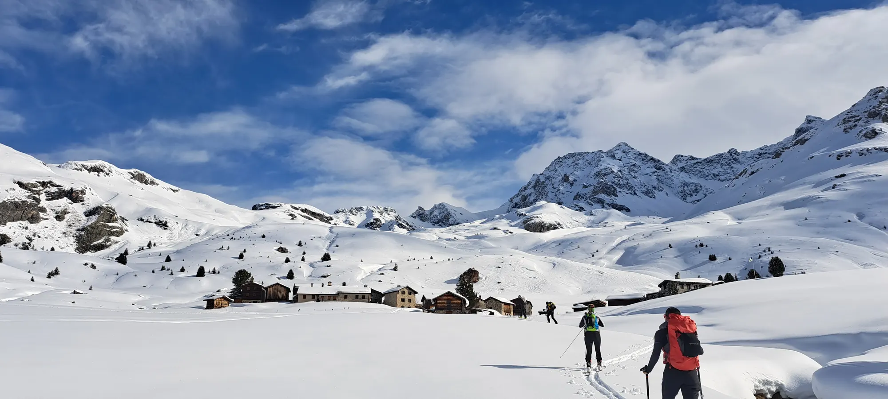
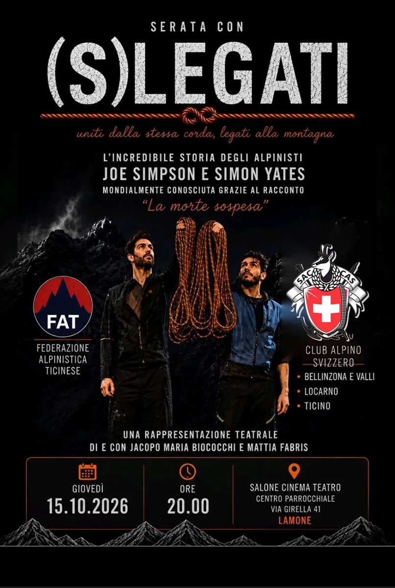
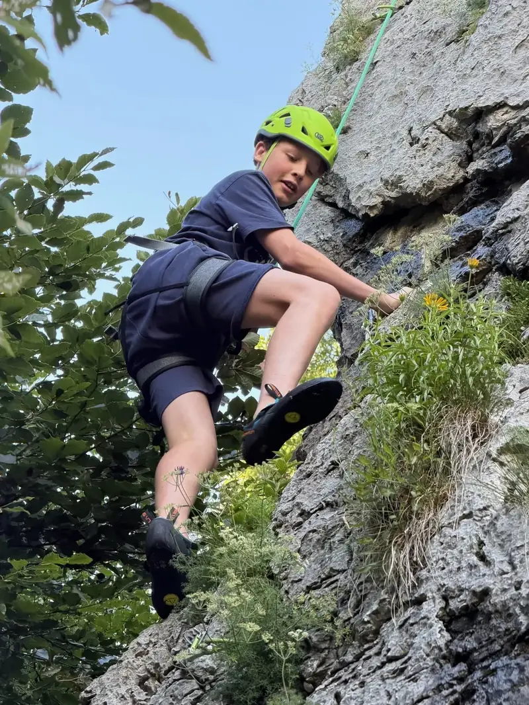
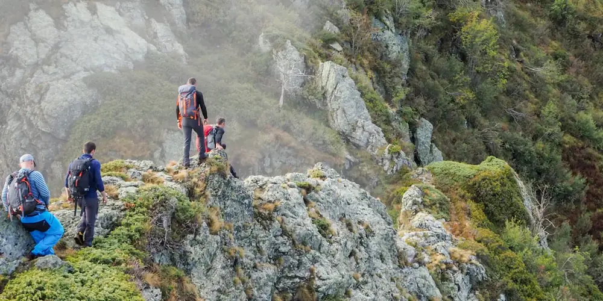
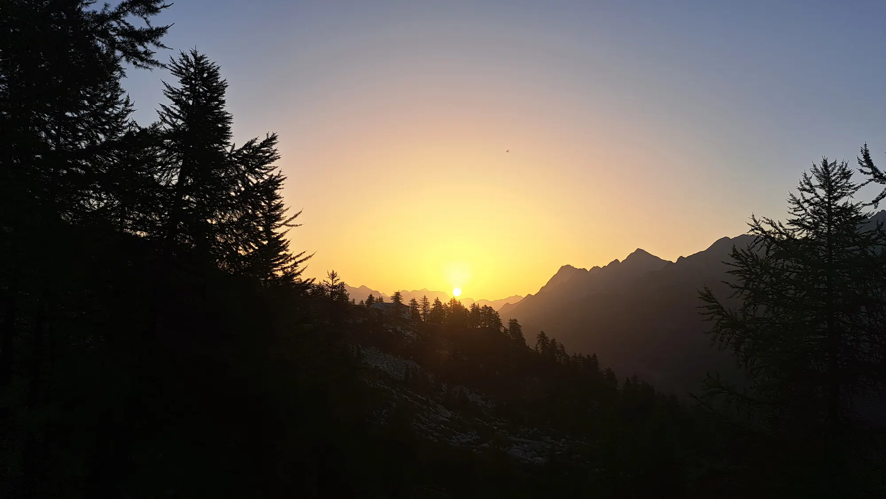

Programma gite 2026
Gite, escursioni e uscite della sezione
Escursionismo, alpinismo, sci alpinismo, racchette e arrampicata: il calendario completo con iscrizioni online.
Sei rifugi dal Passo Cristallina ai Denti della Vecchia, corsi tenuti da professionisti, un programma di gite per ogni età.


Dal 16 al 18 ottobre 2026 PalaCinema Locarno presenta Film Trail Locarno – Cinema, avventura, conversazioni, una nuova rassegna di cinema e incontri dedicata all’avventura, allo sport e alla natura, curata dal regista…

Il 15 ottobre in collaborazione con il CAS Bellinzona, il CAS Locarno e la FAT organizziamo uno spettacolo teatrale presso il Centro parrocchiale di Lamone con: (S)LEGATI Uniti dalla stessa corda, legati alla montagna…

Richiamo prodotto. Informazioni importanti sulla vostra sicurezza e sull’attrezzatura. Avete acquistato un rinvio da arrampicata ALPINISM e/o VERTIKA tra il 1° gennaio 2022 e il 23 luglio 2026. Rinvio Alpinism 11 cm…
Gite per tutti i livelli, un gruppo per ogni età e corsi per imparare a muoversi in montagna in sicurezza.
Escursionismo, alpinismo, sci alpinismo, racchette e arrampicata: il calendario completo con iscrizioni online.

Arrampicata, escursioni e settimane in montagna con monitori della sezione.

Uscite settimanali con capigita esperti, al ritmo giusto e in buona compagnia, dalla Capriasca alle Alpi.
10sab ottobre, fino all’11
Evento · Attivi
10sab ottobre
Evento · Monitori
10sab ottobre
Cultura · Tutti
11dom ottobre
Arrampicata · Tutti
15gio ottobre
Escursionismo · Seniori
15gio ottobre
Corso di formazione · Tutti
Sempre aperte, custodite quando i guardiani sono presenti. Prima di partire, contatta il guardiano per verificare presenza e condizioni della montagna.


Cerchiamo «api operaie». I volontari aiutano i guardiani ad aprire, chiudere e mantenere le capanne, e passano qualche bella serata in quota.
Voglio aiutare
Tariffe ridotte nelle capanne CAS di tutta la Svizzera, corsi, gite e una comunità che ama la montagna quanto te.